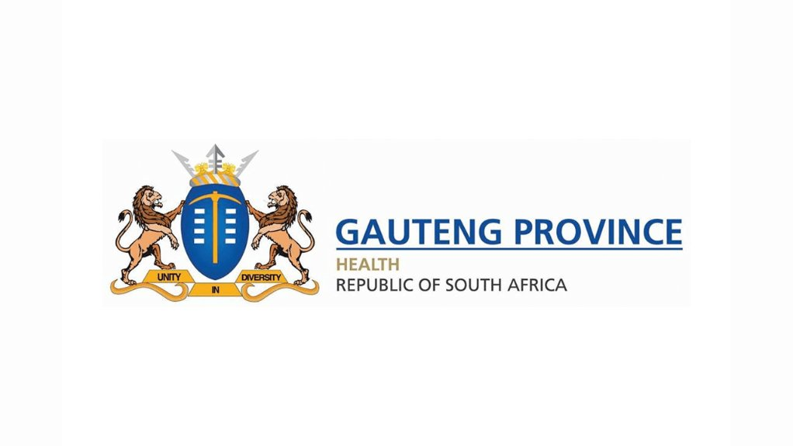
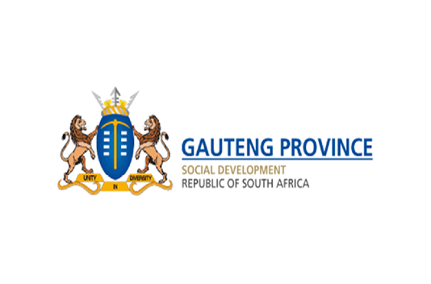
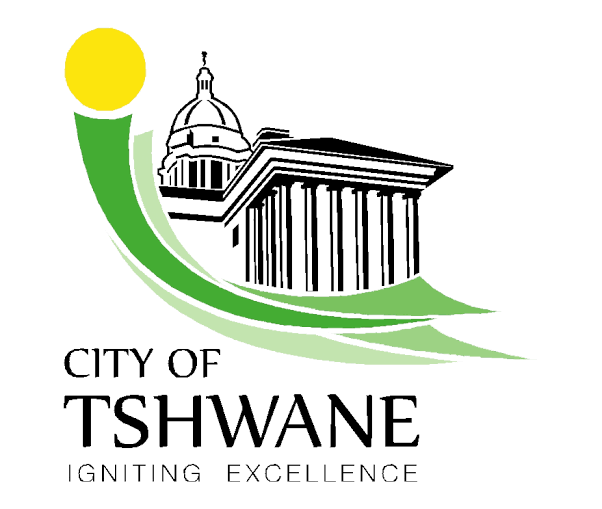

Community welfare
Support for vulnerable households, families in crisis, older persons and persons with disabilities.
A place of hope in Soshanguve
We bring practical care, skills and opportunity to families, young people, women and men across our community.
Welcome to Ethembeni
Ethembeni Foundation is a community-based non-profit organisation responding to the challenges that affect people every day: hunger, unemployment, health inequity and a lack of opportunity for young people.
Our name means “place of hope”. Through connected programmes, we help people meet immediate needs while building pathways to a stronger, more self-reliant future.
Dignity first
Respectful, practical support for every person.
Stronger together
Partnerships that turn care into lasting change.
Our partners and supporters

GDoH
GDSD
CoTWhat we do
Each programme meets a different need. Together, they create a stronger foundation for individuals, families and the whole community.
Support for vulnerable households, families in crisis, older persons and persons with disabilities.
Food parcels, community gardens and nutrition education that help families thrive.
Health awareness, HIV testing referrals, and sanitary and health care packs.
Life skills, mentorship, after-school support and community dialogues.
Work-readiness, training and connections to jobs, learnerships and study.
Refurbished computers, Linux training and practical IT skills for youth.
Positive male role models, safe spaces and healthy pathways to adulthood.
Mentorship, dignity support and confident futures through safe spaces.
Our approach
We work with households, schools, clinics and community partners to understand what matters most.
We respond with food, health, dignity packs, referrals and safe, welcoming spaces.
We grow confidence through mentoring, life skills, work-readiness and digital training.
We link people to education, internships, services and opportunities beyond our doors.
Partner for possibility
We are seeking mentors, food and hygiene donations, used devices, training support, venue space and funding to launch and grow our programmes.
Ways to help
Every contribution can create a more hopeful next step for someone in our community.
I want to helpShare your time, knowledge or professional expertise.
Food, hygiene packs, devices, furniture and supplies.
Help young people see and reach what is possible.
Offer training, work exposure or a partnership.
Let's connect
Reach out to learn more about our programmes, discuss a partnership or find a way to support the work.
Visit225 Flower Street, Soshanguve Block M,
Soshanguve, Gauteng, 0152
DirectorsSifiso Ndlovu · Refilwe Mathebula · Natasha Mathebula